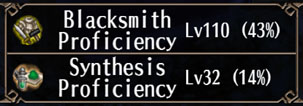
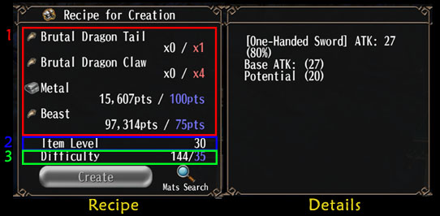
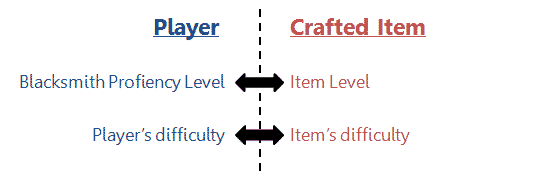

B. Crafting
Crafting là quá trình chế tạo vũ khí clean từ vật liệu. Người chơi tạo ra vũ khí chỉ có ATK, độ bền và DEF. Không có bất kì chỉ số nào khác, thay vào đó là điểm potential có thể chuyển thành các chỉ số khác. Skill để tạo trang bị là Create Equipment. Đó là một EX Skill cho phép mở ra giao diện chế tạo. Nâng skill giúp tăng tỉ lệ chế tạo thành công. Các skill Careful Creation, Expert's Creation khá là quan trọng. Nâng lvl10 nhữNg skill này tăng điểm potential của các trang bị chế tạo lên 10% (làm tròn xuống).
Mỗi nhân vật có Blacksmith Profiency Level riêng, có thể xem tại Menu>Character>Stat>Production. Trang bị mà bạn có thể chế tạo và tỉ lệ thành công phụ thuộc vào lvl của cái này. Lvl này được nâng lên khi chế tạo trang bị. Lvl tối đa mặc định là 50, mỗi skill Novice's, Craftsman's, Blacksmith's, Master's Anvil tăng 5 lvl tối đa cho Blacksmith Profiency Level. Tăng tối đa 4 skill sẽ tăng lvl tối đa lên 250. Thực ra thì không cần nâng tối đa cả 4 skill vì phiên bản game hiện tại chưa cho phép chúng ta đạt lvl 250.
1. Recipe
Ở hình dưới là mô tả recipe của [Brutal Dragon Sword]. Phần 1 là các nguyên liệU cần để chế tạo. Phần 2 là Level trang bị. Phần 3 gồm 2 số, ở bên trái là độ khó nhân vật đạt được, bên phải là độ khó trang bị
Bảng Details hiển thị chỉ số ATK, DEF, độ bền và điểm potential. Vật phẩm chế tạo thành công sẽ có ATK/DEF cao hơn chỉ số cơ bản trên. Lượng chỉ số tăng thêm tối đa phụ thuộc vào loại trang bị, ví dụ vũ khí có ATK cao như Halberd sẽ tăng nhiều hơn so với Knuckle, vũ khí có ATK thấp. Slot sẽ được random, dù cho là thành công hay không thành công. 1_slot khá hiếm, 2_slot thì cực kì hiếm. Trang bị non_slot chế tạo thành công có điểM potential cao nhất kế đến là 1_slot và thấp nhất là 2_slot. Độ bền tương đương nhau với cùng một trang bị.
2. Level and Difficulty
Mỗi vật phẩm có level & độ khó khác nhau. Level trang bị quyết đinh exp bạn nhận được khí chế tạo trang bị đó, càng gần với lvl profiency thì exp bạn nhận được càng nhiều. Nếu lvl trang bị thấp hơn profiency lvl 11 cấp thì không nhận được exp. Do đó để tăng lvl profiency, nên tìm những trang bị có lvl cao hơn profiency của bạn, không phải độ khó
TIPS
Lvl trang bị càng thấp thì giá nguyên liệu càng rẻ, do đó để tiết kiệm, nên chọn chế tạo những item có cùng lvl
với profiency của bạn. Bên cạnh đó công thức vật phẩm boss thường dùng nhiều nguyên liệu thô (metal, ...) hơn là
non-boss. Nên nếu chỉ muốn nâng lvl profiency thì bạn nên chế tạo vật phẩm non-boss sẽ rẻ hơn.
| Độ chênh lệch Lv | EXP nhận được |
|---|---|
| 0 | 25-30% |
| 1 | 22-27% |
| 2 | 19-24% |
| 3 | 16-21% |
| 4 | 13-18% |
| 5 | 10-15% |
| 6 | 7-12% |
| 7 | 4-9% |
| 8 | 1-6% |
| 9 | 0-3% |
| 10 | 0-1% |
Độ khó thể hiện mức độ khó khi chế tạo trang bị. Bạn không thể chế tạo vật phẩm có độ khó cao hơn độ khó bạn đạt được. Giả sử skill Create Equipment đạt tối đa, tỉ lệ thành công (%) được tính như sau:
succes_rate = 10 + (độ khó nhân vật đạt được) - (độ khó trang bị) + (STR/10)
Độ khó nhân vật đạt được được xác định dựa trên 3 thứ: TEC, DEX, level profiency. Mỗi 2 TEC tăng 1 độ khó. Mối 6 DEX, bao gồm cả trang bị, avatar bonus, tăng 1 độ khó. Và mỗi level profiency tăng 1 độ khó. Do đó độ khó nhân vật đạt được tính như sau (mỗi giá trị được làm tròn xuống):
(Độ khó nhân vật đạt được) = (TEC/2) + (DEX/6) + profiency_level
3. Potential
Điểm potential của trang bị sẽ tăng lên thông qua stat gốc của nhân vật, không tính trang bị, skill, food, avatar bonuses. Bản sau thể hiện công thức cho mỗi loại trang bị, có thể thấy vài trang bị chỉ phụ thuộc vào 1 loại stat và cứ 10 stat sẽ nhận 1 điểm potential.
| Equipment | Extra Potential Formula |
|---|---|
| One-Handed Sword | (STR+DEX)/20 |
| Two-Handed Sword | STR/10 |
| Bow | (STR+DEX)/20 |
| Bowgun | DEX/10 |
| Staff | INT/10 |
| Magic Device | (INT+AGI)/20 |
| Knuckle | AGI/10 |
| Halberd | (STR+AGI)/20 |
| Katana | (DEX+AGI)/20 |
| Armor | VIT/10 |
4. Skill & Stat
Các skill cần thiết cho smith như Create Equipment, Careful Creation, và Expert's Creation nên nâng max, sau đó học Anvil nhiều nhất có thể để nâng level profiency. Các điểm skill còn lại có thể cộng tự do để smith của bạn có thể farm để lên cấp.
Về stat thì rắc rối hơn, nó khá phụ thuộc vào trang bị bạn muốn chế tạo và bao nhiêu potential bonus bạn muốn. Ví dụ, bạn muốn chế tạo Bowgun, bạn nên cộng nhiều DEX nhất có thế. Phần còn lại thì có thể cộng TEC (để thêm độ khó nhân vật đạt được), hoặc cộng cho stat khác nếu bạn muốn chế trang bị khác (DEX>STR: 1H/Bow, DEX>AGI: Katana). Lưu ý rằng profiency level chỉ có tăng nhiều dựa trên level của công thức, nên non_TEC smith sẽ có ít khả năng thành công khi chế vật phẩm độ khó cao.
Nhiều loại stat như full crit không cần nhiều điểm potential, nên những trang bị không max điểm potential vẫn khá là hữu dụng. Ví dụ, bạn có smith với 250 AGI + 100 DEX (được tối ưu cho chế Knucke và Katana), bạn vẫn có thể chế Halberd/MD đàng hoàng (+12 potential). Điểm potential cao quyết định cho các gamble stat. Tóm lại, vật phẩm max potential cần smith non TEC, do đó khá khó để làm, bạn cũng có thể cân bằng giữa TEC và các stat khác (không có TEC nếu bạn không chắc, ngoại trừ VIT smith).
Mặt khác bạn cũng nên cân nhắc DEX và STR ảnh hưởng đến tỉ lệ thành công. Cứ 6 DEX tăng 1 độ khó cho nhân vật, đồng nghĩa tăng 1% thành công. Mỗi 10 STR tăng 1% thành công. Nên nếu bạn muốn chế Katana và không thèm các vũ khí khác, 255 DEX + 95 AGI tốt hơn.Tương tự nếu bạn chọn Halberd, tốt hơn là chọn STR là stat chính hơn là AGI.
5. Equipment
Vì stat từ trang bị không cộng thêm potential, trang bị nên tối ưu DEX sau đó là STR. Lưu ý nếu DEX của bạn chỉ có 1 (Staff smith), DEX% sẽ không có tác dụng gì. Tương tự với STR. Trong trường hợp này bạn nên có 20 DEX & 20 STR trên vũ khí và giáp. Nhưng nếu smith của bạn có DEX hay STR là stat chính, bạn nên cân nhắc +10%DEX hoặc +10%STR.
Cũng lưu ý rằng tổng DEX nên là bội số của 6, còn STR nên là bội số của 10. Bạn nên chọn food hay xtal để làm tròn hai stat này.